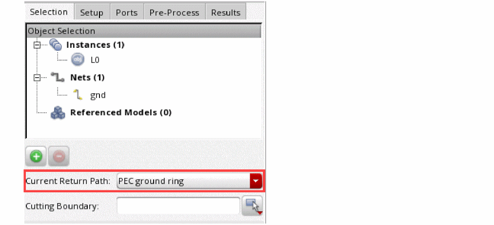
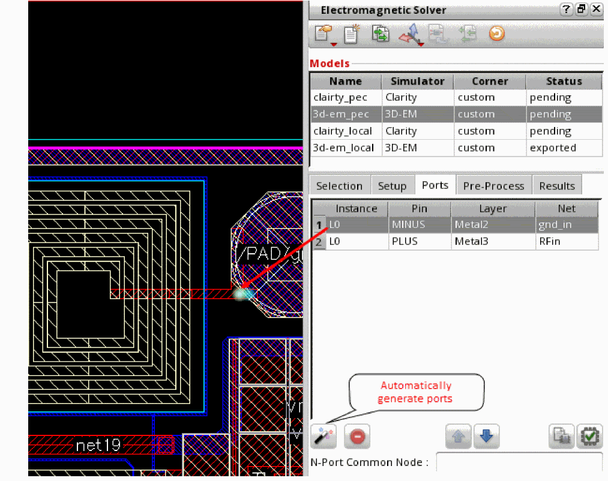

Creating Ports Automatically for Clarity Models in IC Layouts
The automatic port generation feature uses some pre-defined rules to create ports for the selected objects and nets. You can use this feature when you are not sure about the negative edges of ports, and you want Layout MXL to automatically identify the current return path.
To create ports for an IC layout by using the automatic port generation feature:
- Ensure that all instances and nets in the model can be enclosed in a perfectly conducting box on all sides.
-
On the Selection tab, choose
PEC Ground Ringfrom the Current Return Path drop-down list.
 -
On the Setup tab of this assistant, select an appropriate option from the Die Ground drop-down list and specify a size or scaling option for the die ground.
A die ground is a metal shape that will be inserted into the model on an automatically generated layer located below the substrate. The conductivity of the die ground is very high. This non-physical conductivity might result in warning messages from the solver, but you can safely ignore those warnings. -
On the same tab, select the Display Highlight check box. This helps in viewing an accurate representation of the port placement.
The Side Walls field automatically shows a value depending on the current return path set for the model. -
On the Ports tab, click Automatically Generate Ports to automatically generate ports for the selected objects.
Layout MXL identifies ports of the selected instances. For each port, it adds an extension towards the boundary and a port at the end of each extension. The + edge is on the extension and the - edge is on the PEC boundary.
The details of ports are displayed in the table on the Ports tab.
The blue dots indicate the negative connection of the ports on the PEC boundary. The green dot indicates the other end, which is the positive connection of the port extension. All the ports for an instance are on the same layer as that of the instance. - If you do not need any port, select its row, and click Remove Port.
-
Specify a net name in the N-Port Common Node field. The reference pin for the N-port instance in the schematic is connected to this net.If an instance selected for a model is listed in the value of the setNotEmbedded environment variable it has pins, the tool generates ports on its pins.
Related Topics
Guidelines for Current Return Path in Models that Use Clarity 3D Solver
Creating Ports Manually for Clarity Models in IC Layouts
Return to top